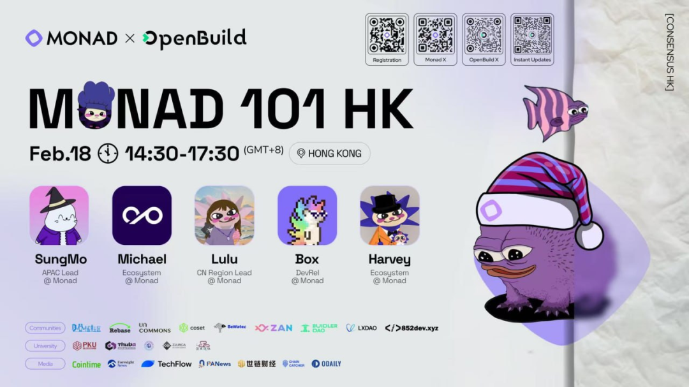
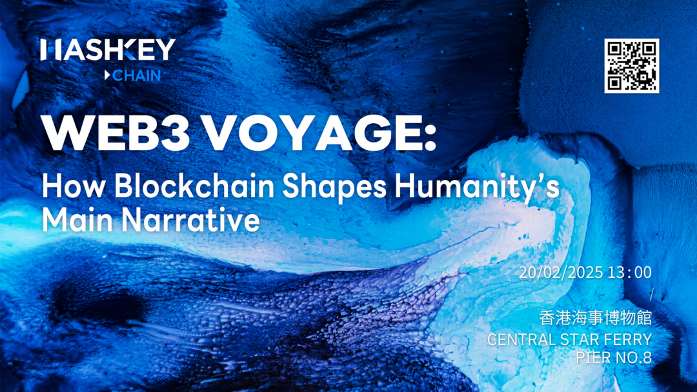
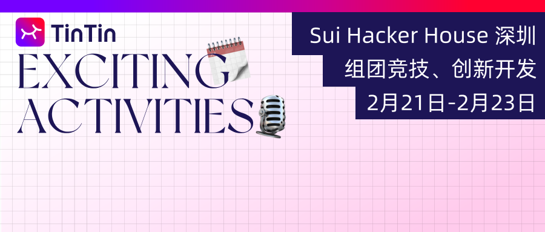
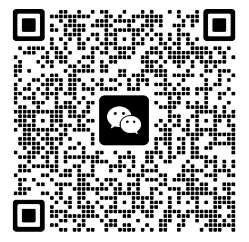
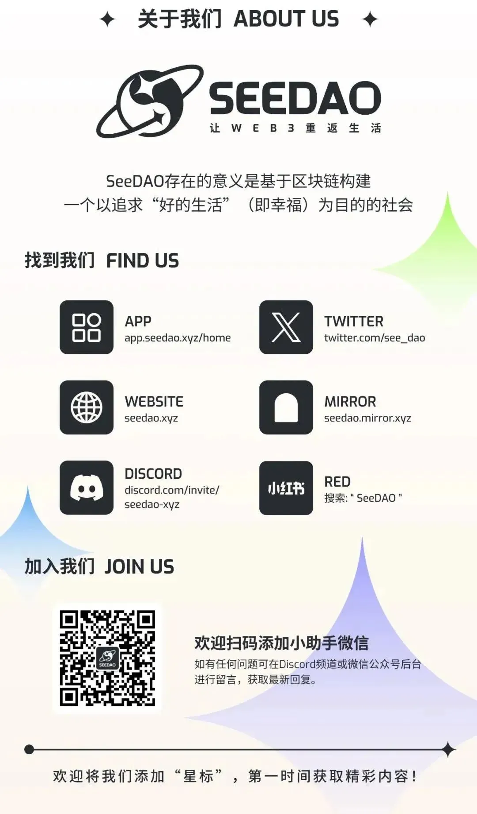

正月初八一开工，SeeDAO Twitter 即刻送上好事成双礼包 Consensus 大会门票 $799/张，抽奖两张。
大会介绍：
全球历史最悠久且具影响力的加密货币暨Web3 活动 Consensus大会，首度于美国以外地方举行。
大会自2015年开始举办，Consensus 宣布将于今年2月18日至20日移师香港会议展览中心举行。活动预计将吸引8,000 人参与，当中6,000 名参加者来自全球各地。
抽奖时间：即日起至2月16日中午12点
参与方式：查看 https://x.com/see_dao
另，分享一些最近活动及Consensus大会 side event
1、Base Builder House 上海 & 深圳站
时间：2月13-17日
报名：聚集 AI 时代的加密创新者，Base Builder House 开启报名
2、Monad 101 HK
时间：2月18日 14:30 - 17:30
报名：https://lu.ma/70nr61pv

3、HashSeek: Bridging Al Agents and Web3 (上海站)
时间：2月15日 14:00 - 18:00
报名：https://lu.ma/v3vm662f
4、HashKey Chain Web3 Voyage 大航海 (香港站)
时间：2月20日 13:00 - 21:00
报名：https://lu.ma/hzz6mel6

5、Sui Hacker House 深圳站
时间：2月21-23日
报名：Sui Hacker House 深圳与你共拓 Web3 项目开发新疆域

Consensus大会 活动群组

相关文章：重磅｜Consensus 香港大会，一起见证区块链的未来
整理：文倩
